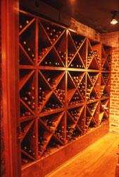
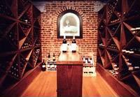
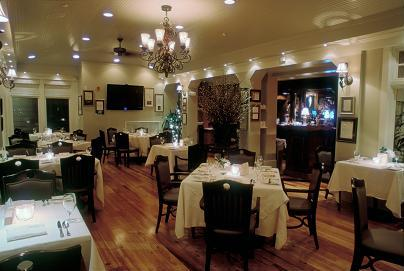
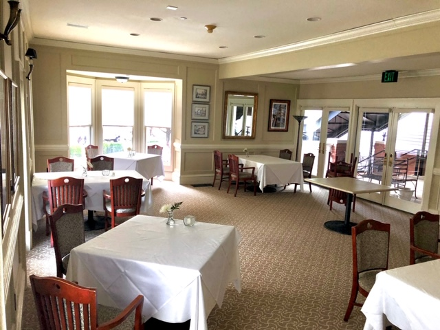
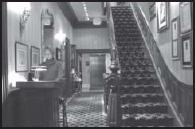

The Tavern
“A restaurant within a restaurant…”
A lively spot for drinks after work or a casual meal — an inviting bar as well as dining area.
You’ll feel instantly at ease surrounded by warm exposed brick walls.
We have a large selection of creative cocktails, local beers, and boutique wines, and our bartenders mix the meanest martinis in town! We also have a new lounge area to enjoy our wonderful libations.
If you are looking for a more informal setting, you may ask to be seated in our Tavern where you will be able to select from either the main dining room menu or our Tavern menu. The Tavern Bar is the perfect setting to meet friends for drinks after work.




